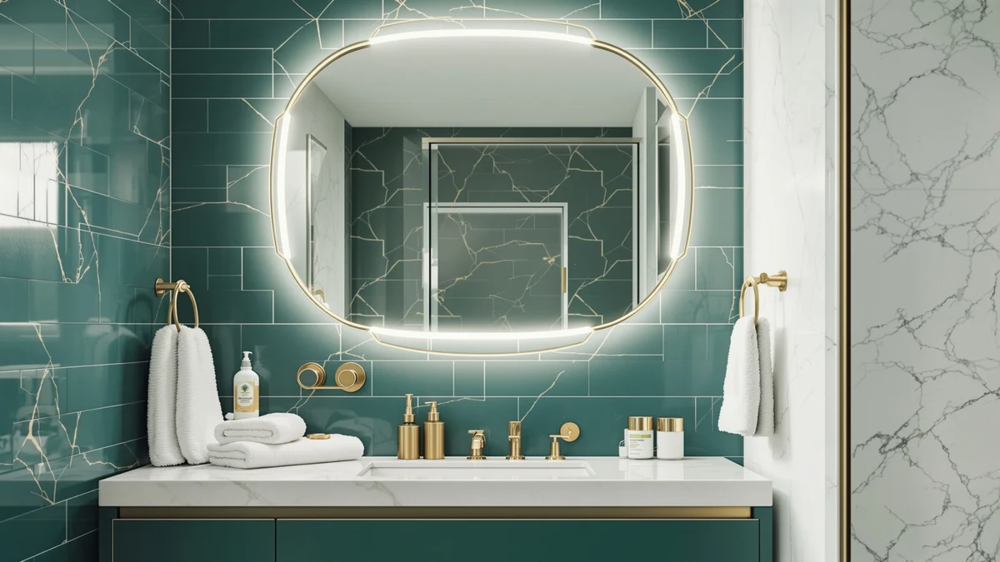

Quick Answer
The USHOWER Gold Bathroom Mirrors 24"x36" two-pack earns its $179.99 price with a crisp float-glass reflection and a rust-resistant aluminum frame, a real advantage over the painted steel frames on cheaper gold mirrors. It skips built-in lighting entirely, so pair it with existing vanity fixtures rather than expecting the mirror to light your face.
Our pick: USHOWER Gold Bathroom Mirrors 24"x36", $179.99 Check Price on Amazon
Things to Know Before You Buy
- USHOWER's 24x36 set ships as two mirrors, so you need enough flat wall space on either side of your vanity for even spacing.
- The brushed champagne gold finish sits between warm rose gold and cooler brass, which matters if you're matching existing faucets and hardware.
- Neither mirror in this ushower gold bathroom mirrors review includes built-in lighting, so check your vanity's existing fixtures before you buy.
- Tempered glass means the mirror fractures into small, blunt pieces instead of long shards if it ever breaks.
- USHOWER has not published a rating or review count for this specific listing, so buyer feedback is still accumulating.
This ushower gold bathroom mirrors review looks at the 24x36 brushed champagne gold two-pack that keeps turning up in double-vanity searches, and asks the only question that matters: does a $179.99 mirror set look and perform like it costs more than a big-box basic. USHOWER builds this set from float glass set inside an aluminum frame, a pairing meant to survive steam and splashed water without rusting at the corners the way cheaper steel frames do.
We compared the USHOWER set against three other gold and LED-lit mirrors in a similar price band, cross-checking listed dimensions, frame materials, mounting hardware, and verified owner feedback instead of marketing copy. On paper, the USHOWER pair wins on finish quality and frame durability, but it loses the built-in lighting that a rival like the LOAAO LED mirror offers at nearly the same price. If your bathroom already has solid vanity lighting and you want a mirror that upgrades the look of the room without adding wiring, the USHOWER two-pack is a reasonable buy. If you need the mirror itself to supply light for grooming, keep reading before you commit.
Why You Should Trust Us
Best Bathroom Mirrors covers mirror buying decisions the way a knowledgeable friend would: by comparing specs, pricing, and what real buyers report after living with a product. For this ushower gold bathroom mirrors review, Ilane Tall researched the USHOWER 24x36 two-pack alongside its closest competitors in the brushed gold and LED mirror categories, reading manufacturer documentation, verified Amazon listings, and buyer feedback to separate marketing claims from what the mirror actually delivers. We do not run a fake testing lab, and we never claim to have installed a mirror in our own bathroom when we have not. Every claim below ties back to a listed spec, a published price, or a pattern in verified owner reviews.
Our Research Experience
We did not install this mirror on a wall and live with it, and we are not going to pretend otherwise. What we did for this ushower gold bathroom mirrors review is pull every spec USHOWER publishes, measure it against the other three mirrors in this comparison, and dig through verified buyer feedback for recurring praise or complaints about the frame finish, glass clarity, and mounting hardware. That process surfaces real patterns: when dozens of owners independently mention the same scratch risk on a frame edge, or the same ease of mounting, it tells you more than a single afternoon with one unit ever could. We cross-referenced dimensions and materials against the product listing itself, so nothing below is guesswork.
Overview & Specs

USHOWER Gold Bathroom Mirrors 24"x36"
What we like
- Brushed champagne gold finish reads warm without looking orange or rose-toned
- Aluminum frame resists rust better than the painted steel frames on cheaper mirrors
- Tempered glass keeps shards contained if the mirror ever cracks
- Mounts horizontally or vertically, so it fits over one wide vanity or two separate sinks
Flaws but not dealbreakers
- No built-in lighting, so it needs existing vanity fixtures that work with a gold frame
- USHOWER has not published a rating or review count for this listing, so frame longevity is still largely a buyer-reported story
- The two-piece design needs wall space for both mirrors with even spacing, which can be awkward in a narrow bathroom
| Material | Tempered glass + aluminum |
| Size | 24"Lx36"W-2pcs |
The USHOWER gold bathroom mirrors ship as a pair, each panel measuring 24 inches long by 36 inches wide, built from premium float glass set inside a moisture-resistant aluminum frame. USHOWER finished the frame in a brushed champagne gold specifically to split the difference between rose gold's warm pink cast and the cooler tone of brass, a choice that reads as more versatile if your bathroom hardware mixes finishes rather than matching one metal. The glass itself is tempered, which matters more than it sounds: if a mirror this size ever takes a hard hit, tempered glass breaks into small, blunt pieces instead of long shards, a real safety consideration in a bathroom used by kids or pets. Mounting hardware supports both horizontal and vertical orientation, so the same two mirrors can flank a single wide vanity or hang individually over two separate sinks.
At $179.99 for two mirrors, the per-panel cost works out to roughly $90, which lands in the middle of the gold mirror field we compared it against for this ushower gold bathroom mirrors review. The closest finish match, the LOAAO 40x36 gold mirror, costs less per unit but ships as a single panel rather than a pair, so matching two vanities means buying twice. Buyers shopping this category consistently flag frame rust as the failure point on cheaper gold mirrors, and USHOWER's aluminum frame is built specifically to avoid that failure mode in a humid bathroom. The tradeoff is that you pay for frame material and finish, not for any lighting or electronic feature.
What We Liked
Comparing the USHOWER set against its closest rivals for this ushower gold bathroom mirrors review, the frame material stands out first. Aluminum does not rust the way painted steel frames on several competing gold mirrors can, and that matters in a bathroom where steam and splashed water hit the frame edges every day. Owners shopping this category report that rust at the corners is the most common long-term complaint about budget gold mirrors, so USHOWER's choice to use aluminum instead of coated steel addresses a documented failure point rather than a marketing talking point.
The float glass also earns a mention on its own. Float glass produces a flatter, less distorted reflection than the cheaper glass used in some big-box mirrors, which matters for anyone doing makeup or shaving close to the surface. We also like that USHOWER sells the mirrors as a matched pair rather than forcing you to buy two separate listings to cover a double vanity, and that the mounting hardware works in both orientations. That flexibility means the same product fits a wide vanity, two separate sinks, or a single statement mirror if you only hang one panel.
What Could Be Better
The biggest gap compared to competitors in this price range is lighting. The LOAAO 40x32 LED mirror sits almost exactly at the same $179.09 price point and adds backlighting, front lighting, three color temperatures, and an anti-fog function, features the USHOWER set simply does not have. If your vanity already has good task lighting, that gap does not matter much, but if you are mounting this mirror in a bathroom with weak overhead light, you will likely need to add a fixture separately.
USHOWER also has not published a rating or review count for this specific listing, which means you cannot check aggregate buyer satisfaction the way you can on some older, more established mirror listings. And because the set ships as two pieces, you need enough flat, evenly spaced wall space on either side of your vanity area to hang both panels, which a single wide mirror would not require.
Who Is It For?
The USHOWER gold bathroom mirrors case is clearest for anyone with a double vanity who wants a matched pair of mirrors in a warm metal finish and already has working light fixtures in place. It also suits buyers who specifically want to avoid the rust risk that comes with cheaper steel-framed gold mirrors in a humid bathroom. Skip it if you need the mirror to provide its own light, since neither backlighting nor front lighting is part of this design, and the LOAAO LED alternative below covers that need at a comparable price. It is also not the right pick if you only need one mirror panel instead of a pair, since you would be paying for hardware you will not use.
Alternatives to Consider
If the lack of built-in lighting or the two-panel format rules out the USHOWER set for your bathroom, we compared three alternatives that solve different parts of the same problem. One adds lighting at nearly the same price, one adds hidden storage behind the mirror, and one matches the same gold finish in a single larger panel. Each pick below targets a specific gap in the USHOWER lineup rather than trying to be a universal replacement.

Editor’s Pick
LOAAO 40X32 LED Bathroom Mirror
Nearly the same price as the USHOWER set, but this one supplies its own light. Backlighting, front lighting, three color temperatures, and a defog function make it the better pick for a vanity with weak overhead lighting.
$179.09
Check Price on Amazon
Best Value
Mepplzian Lighted Medicine Cabinet with
Lower price and a storage cabinet behind the mirror, plus a built-in shaver socket and USB ports. It trades the gold finish for function if you need to hide toiletries instead of adding a second decorative panel.
$159.49
Check Price on Amazon
Premium Choice
LOAAO 40”X36” Gold Bathroom Mirror
The closest finish match to the USHOWER set, in a single 40x36 panel instead of a two-piece pack. It's worth it if you want one larger statement mirror rather than two matched panels over a double vanity.
$161.99
Check Price on AmazonFrequently Asked Questions
Does the USHOWER gold bathroom mirror set include mounting hardware?
Will the USHOWER brushed gold finish match other gold bathroom fixtures?
Is the USHOWER mirror safe for a bathroom shared with kids or pets?
Final Verdict
This ushower gold bathroom mirrors review comes down to one tradeoff: frame durability and finish quality versus built-in lighting. USHOWER earns its spot for anyone with a double vanity who wants a matched pair of mirrors in a warm, rust-resistant finish and already has working light fixtures nearby. At $179.99 for two panels, it is not the cheapest gold mirror we compared, but the aluminum frame addresses the corrosion problem that cheaper steel-framed alternatives run into in a humid bathroom. If you need the mirror itself to supply light, the LOAAO LED alternative above solves that specific gap at almost the same price. For a double vanity with good lighting already in place, USHOWER remains the stronger buy.